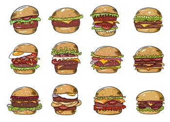
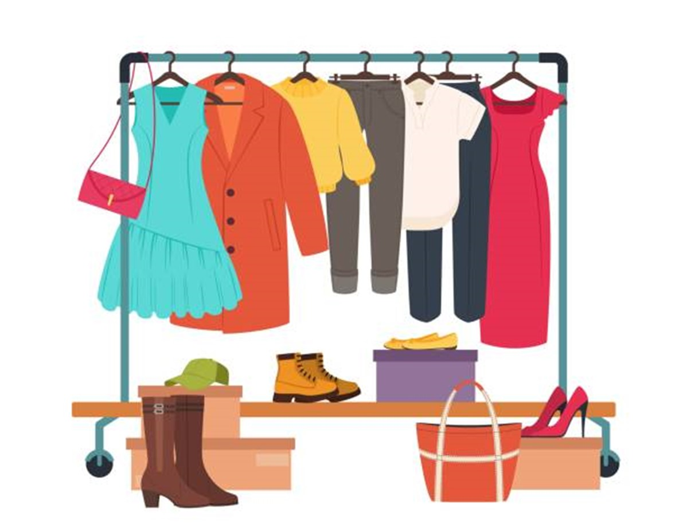

• This SQL project involved analyzing a dataset of burger orders.
• I used various SQL techniques such as CTE, JOINs, and aggregate functions to answer several questions.
• The analysis provided insights into the number of orders, types of burgers ordered, and the performance of runners delivering the orders.
• The case study involves analyzing sales performance for a company named Data Mart, after implementing sustainable packaging methods.
• I have used SQL concepts such as CTE, CASE WHEN, and window functions in the queries.

• The case study involves analyzing sales performance for a company named Texture Tales providing an optimized range of clothing and lifestyle wear for the modern adventurer.
• I have used SQL concepts such as window functions, joins in the queries.